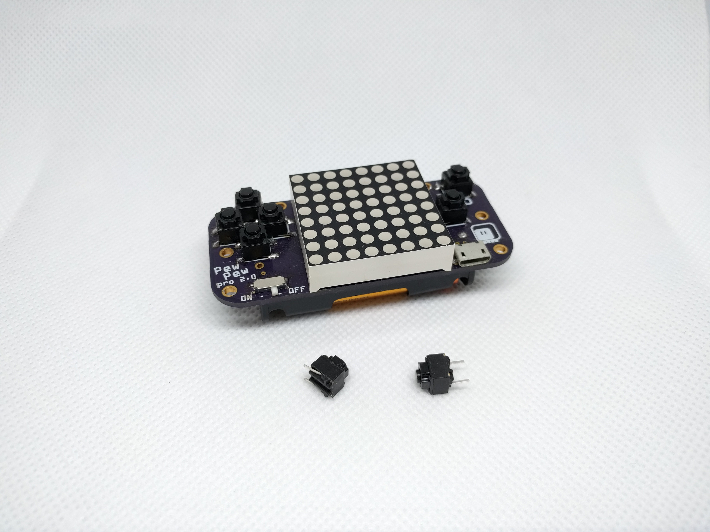

Better Buttons?¶
Published on 2021-04-08 in PewPew Standalone.
Buttons are always a huge problem in a hand-held device. Sure, when making the prototype you can just slap any tact switches on there, and they work well enough. But for something like a game console, where you are going to be pressing those buttons a lot of time, the feel they provide is very important.
You can dismiss right away most of the metal switches available out there — their stem is too small to be pressed comfortably multiple times, and they require quite a bit of force to be pressed as well. Unless you are also doing custom case and key caps, they are simply not suitable.
The standard 6mm tact switches are not completely hopeless. They are common and cheap, come with the stems of different heights, and sometimes you can even find versions of them with lower than regular actuation force, which helps a lot. But they still are pretty hard and noisy.
Then you have the “quiet” silicone switches, which look great, with their large square stem, but feel extremely mushy. There is practically no tactile feedback at all.
But recently I found one more source of buttons, which have very nice feel. I didn’t see them before, because they are not sold in the “tact switch” category, and they are usually through-hole, not SMD (though can be hacked for that). I’m talking about the buttons that are used in computer mice. They used to be very large, and thus unsuitable for our small devices, but recently there are versions of them that look very much like our tact switches, except they have much lower actuation force and much more pleasant and crisp click. After all, they are for clicking your mouse.
As an experiment, I replaced the tact switches on one of my PewPew prototypes with those switches, and I am very pleased with the outcome:
As you can see, the stem is rather small, but it’s big enough to be pressed comfortably. The travel is short, and the actuation force is small, but the click is very pronounced and satisfying.
You can see on the photo that one of the switches has its legs bent — this, together with small pieces of the legs visible on the opposite side, makes it possible to solder it to a reguar 6mm SMD tact switch footprint. However, there is really no reason for PewPew Standalone to use only SMD switches — I could easily add holes to the footprint, to make such buttons an option.
I also found some “low-profile” versions of mouse button switches, that are only 4mm high, but they are “quiet”, with the click being much quieter and less satisfying — but they are still much better than regular tact switches, due to much lower actuation force and travel. I’m considering using them in future handheld devices.